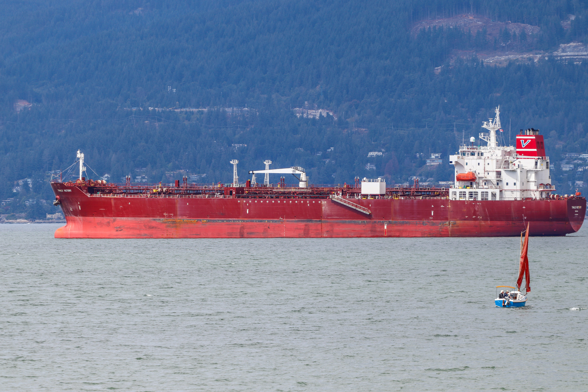

WASHINGTON — In a dramatic escalation of the ongoing conflict with Teheran, President Donald Trump announced what he termed the "most crushing economic operation ever taken against any country."
Writing on Truth Social, Trump declared an "Economic D-Day" aimed at completely isolating the Islamic Republic. The new strategy targets both Iran and third-party nations or foreign institutions that help facilitate its trade.

The White House is setting its sights on closing every remaining financial and logistics loophole that allows Teheran to operate. According to the president's announcement, key targets include:
"It all needs to stop NOW," Trump warned, calling on global allies to join Washington in cutting off Teheran's remaining revenue streams.
The shift toward an all-out economic pressure campaign comes as military tensions around the Strait of Hormuz enter their sixth month without a clear diplomatic resolution.
Whether this "Economic D-Day" achieves a breakthrough or simply drags the conflict into a protracted economic stalemate remains the central question facing global observers.